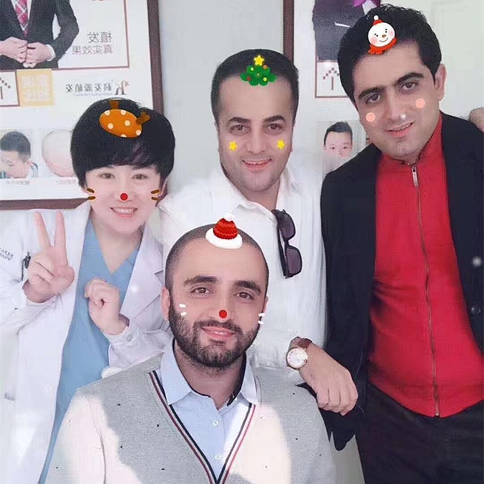

A specialized procedure to restore or enhance body hair in multiple areas
Body hair transplant is a specialized FUE procedure that restores or enhances hair growth on areas where hair is thin, patchy, or absent. Using advanced microneedle technology, healthy follicles are carefully harvested from donor areas and strategically implanted to create natural, permanent results.
Whether you want a fuller chest, enhanced beard line, restored pubic hair, or coverage for scars, our surgeons understand the unique growth patterns of each body area and tailor their technique accordingly.
Comprehensive body hair restoration for multiple regions
Achieve fuller, more defined chest hair with natural gradient density that matches your body type
Restore natural density and growth direction for intimate areas with discreet, permanent results
Enhance or restore hair patterns along the spine and shoulders for a masculine appearance
Personalized abdominal hair restoration tailored to your aesthetic goals and body type
Body hair transplant addresses various concerns and aesthetic goals
Genetics left you with less body hair than you'd like. Our procedure creates fuller, more masculine coverage.
Hide scars from surgery, accidents, or burns on your chest, back, or other body areas with natural hair growth.
Restore body hair lost due to aging, hormonal changes, or medical conditions with permanent results.
Achieve the masculine body hair pattern you've always wanted — fuller chest, defined beard line, or enhanced arms.
Women can also benefit from body hair restoration for eyebrows, scalp, or other areas affected by hair loss.
Feel more confident at the beach, gym, or intimate moments with natural-looking body hair.
Typical graft counts for common body hair transplant procedures
Full chest coverage requires 800-2,500 grafts depending on the desired density and area size. Single session of 4-6 hours.
Pubic restoration typically requires 300-800 grafts. Procedure takes 2-3 hours with quick recovery.
Back hair restoration requires 500-1,500 grafts depending on the area. Procedure takes 3-5 hours.
Abdominal hair transplant requires 400-1,200 grafts. Procedure takes 3-4 hours with natural results.
Advanced FUE microneedle technology for natural, permanent results
We discuss your goals and examine the treatment area. Our surgeon designs a customized hair pattern that matches your body type and aesthetic preferences. We mark the exact placement areas and discuss expected density.
We carefully select the best donor hair for your body area. For chest and beard, we often use beard hair because it matches the thickness and texture. For other areas, we may use scalp hair or body hair from other regions.
Using our 0.6mm microneedle FUE system, we extract individual follicles with minimal scarring. The tiny extraction sites heal quickly and are barely visible, allowing you to keep donor areas short if desired.
Extracted follicles are immediately placed in a specialized preservation solution and sorted under a microscope. We prepare each graft to maximize survival rate and ensure optimal growth direction.
Using precision implanter pens, we place each graft at the correct angle and depth to match natural body hair growth patterns. We create natural gradients — denser in the center, lighter at the edges — for authentic-looking results.
Trusted expertise for natural-looking body hair restoration
Our surgeons understand the unique growth patterns, angles, and densities of different body areas. We tailor our technique to each region for natural-looking results.
Industry-leading graft survival rates thanks to our advanced microneedle technology and meticulous handling procedures. Every graft counts.
Full English-speaking support from consultation to recovery. We help with travel planning, accommodation, and airport pickup for a seamless experience.
China's leading body hair restoration specialists
Nearly two decades of specialized body hair transplant expertise with thousands of successful procedures.
Convenient locations across major cities in China with consistent quality standards.
Full support for international patients throughout treatment and recovery.
Advanced FUE microneedle technology for chest, beard, and body hair restoration
Our specialized body hair transplant procedure restores natural-looking hair to chest, beard, pubic, and other body areas. Every graft is placed with surgical precision and artistic vision to recreate the organic growth patterns of natural body hair.
Custom-shaped to complement your body type
Lifelong, natural-looking body hair
0.6mm microneedle extraction
Undetectable, authentic results
From consultation to natural-looking body hair
We discuss your goals and design a customized hair pattern for your body
We select the best donor hair to match the target area's thickness and texture
Using 0.6mm microneedle FUE, we extract individual follicles with minimal scarring
We place each graft at the correct angle and depth for natural growth patterns
New hair starts growing in 3-4 months with full results visible at 12 months
Our 0.6mm micro-punches are smaller than industry standard, leaving minimal scarring and faster healing.
Industry-leading graft survival rates thanks to meticulous handling and advanced preservation techniques.
We create natural gradients and patterns that mimic authentic body hair growth.
Full English-speaking team to guide you through every step of your journey.
Nearly two decades of specialized body hair transplant expertise.
Direct-operated locations across major cities in China.
50-70% cost savings compared to Western countries.
Full support for international patients throughout treatment.
Authentic moments with our happy, successful patients

Celebrating their amazing results with our care team

Patient proudly showing off their fantastic new hairline

Joyful patient sharing their fantastic experience

Patient celebrating with our expert medical team

Thankful patient following their successful transplant

Thrilled patient showcasing their hair restoration results
Real stories from body hair transplant patients worldwide
"I'm a competitive swimmer from Toronto and I've always felt self-conscious about my practically hairless chest. I looked into SMP first but I wanted something real — hair that actually grows. Ten months post-op, I've got a natural chest hair gradient from beard donor follicles. The donor area under my chin? No one can tell I had extractions. I'm not shy walking around the pool locker room anymore."
"I'm half Lebanese and while the men in my family grow thick body hair, I somehow got the short straw. Chest, abdomen, even my legs were patchy. Barley used a mix of scalp and beard donor hair for 1,800 grafts across chest and abs. Eight months in, the hair grows exactly like natural body hair — I trim it every couple weeks just like my brother does. My cousins can't believe the difference."
"After a motorcycle accident left me with a sizeable bald patch on my left leg, I wore long pants for three straight years — even during Madrid summer. The team used leg hair from my right thigh as donor, which made total sense because the texture matched perfectly. Seven months later and the scar is completely covered. I'm back to wearing shorts and no one at the gym has asked a single question."
"I was really worried about using body hair as donor for my chest — would it cycle properly? Would it fall out and never come back? My surgeon explained that transplanted follicles keep their original growth characteristics, and he was right. The pubic area donor sites healed with basically zero visible marks, and at month 11 my chest hair goes through the same grow-and-shed cycle as the rest of me. I shave it regularly and it grows back exactly like the real thing, because it is."
"I'm a personal trainer in Rotterdam and spend a lot of time at public gyms with communal showers. For years I avoided changing around anyone because of how patchy my underarm and chest hair was. I had 1,200 grafts placed — chest mostly, plus some touch-up under my arms. The surgeon matched the growth direction so precisely that my armpit hair fans out naturally. No one at my gym suspects a thing. I feel like a normal guy now."
"I chose Barley because my surgeon actually listened when I said I didn't want a carpet-looking chest. He mapped out a natural tapered pattern — denser toward the center and thinning out toward the edges, just like how Swedish guys my age grow hair naturally. They used a blend of scalp and axillary donor hair to get the right coarseness. Eleven months later, my girlfriend says she can't tell where the transplant line ends. That's the best compliment I could ask for."
Experience our modern and comfortable facilities

Our state-of-the-art facility

Relax in our premium lounge

Sterile and advanced

Private and professional

Comfortable post-op space

Welcoming entrance
Everything you need to know about body hair restoration
Click to copy contact information
15810155700
+86 13730143529
hairtransplant@qq.com

Everyone's hair loss journey and solution are unique due to a variety of factors. Our hair restoration experts will assist you in determining the root cause and the best solution for your hair restoration plan. If you have any questions, please ask; we are happy to assist.